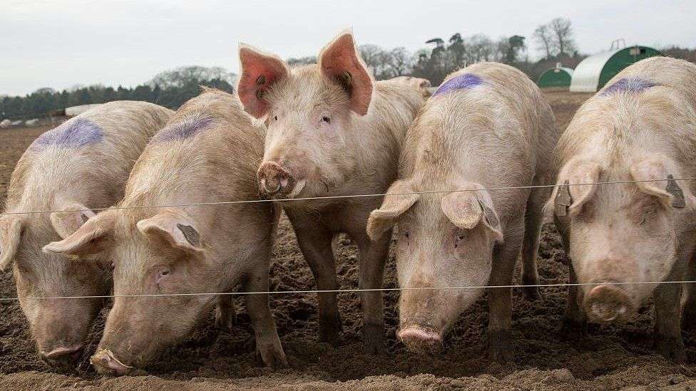
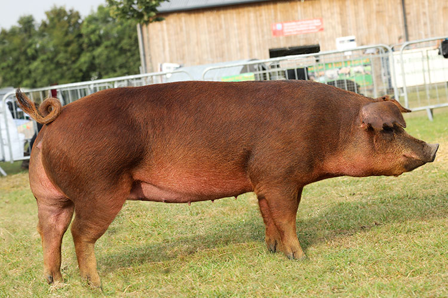
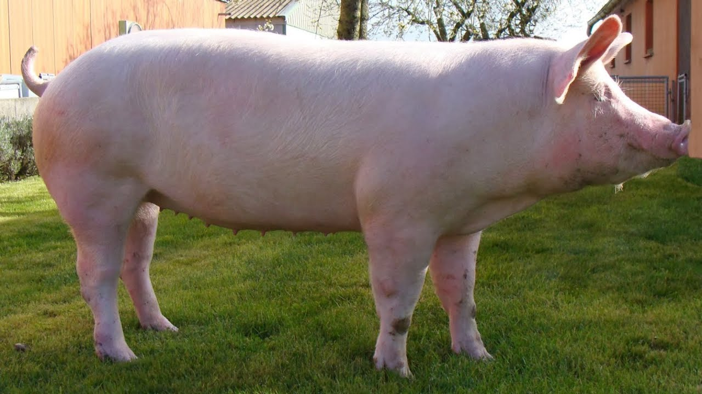
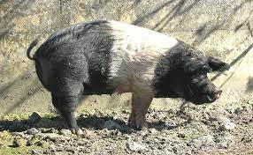
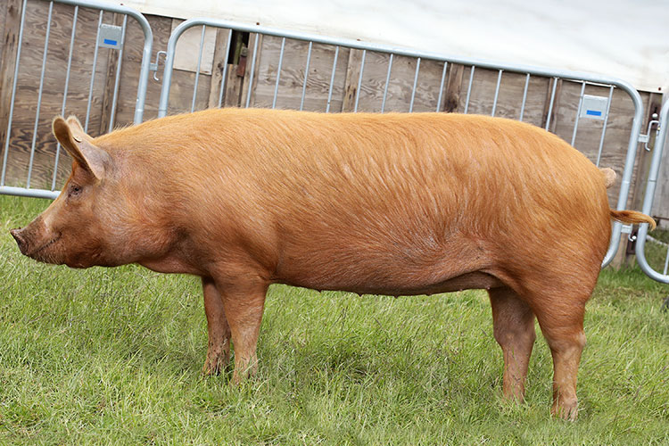

THE PIG
In broad terms, pigs are domesticated hooved mammals with bristly hair, upright ears, short legs, and curved tails.
They are omnivorous, and they use flat snouts to dig through the soil for food.
Pigs are typically farmed for their meat, but they have also been kept as pets.
Kind of Pig
Characteristics

Duroc Pig
Auburn color, quiet temperament

Yorkshire Pig
White color, erect ears

Angeln Saddleback Pig
Large, lop-eared

Tamworth Pig
ENDANGERED- Elongated head, lined snout

To the top
Go back